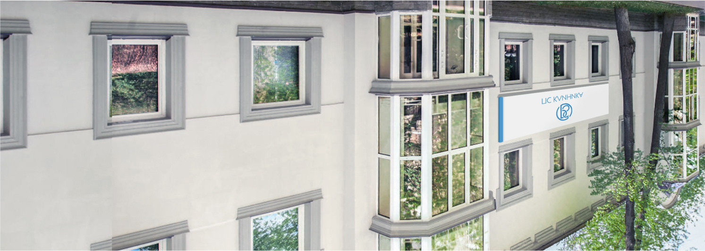
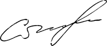

Вы оговариваете время приезда наших специалистов. Наши специалисты находят способ взаимодействия с больным и в доступной форме доносят до его сознания реальную правду его положения. Практика показывает что интервенция – самый эффективный метод убеждения наркозависимого начать лечение.